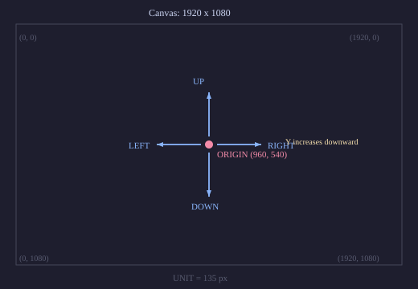
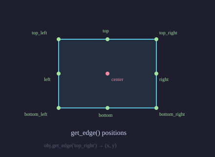
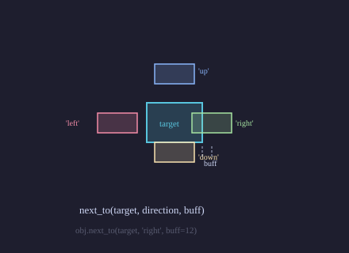

VObject¶
Coordinate System¶
All positions use SVG pixel coordinates on a 1920 x 1080 canvas. ORIGIN is
the centre at (960, 540). Direction constants use screen conventions where
Y increases downward.
{kind=link}

- class VObject(creation=0, z=0)¶
Abstract base class for all visual objects. Every VObject has a
stylinginstance controlling fill, stroke, opacity, and transforms, plus time-varyingshowandzattributes.Measurement
- bbox(time)¶
Bounding box at time.
- Returns:
(xmin, ymin, width, height)
- center(time=0)¶
Centre of the bounding box.
- Returns:
(cx, cy)
- get_width(time=0)¶
Width of the bounding box.
- get_height(time=0)¶
Height of the bounding box.
- get_edge(edge, time=0)¶
Coordinate of a named edge.
- Parameters:
edge (str) – One of
'top','bottom','left','right','center','top_left','top_right','bottom_left','bottom_right'.- Returns:
(x, y)

- path(time)¶
SVG path string (
dattribute) for this object at time.
Movement
- shift(dx=0, dy=0, start=0, end=None, easing=smooth)¶
Translate by
(dx, dy). If end is given, the shift is animated.Example: shift
Shift a circle across the screen.
"""Shift a circle across the screen.""" from vectormation.objects import * v = VectorMathAnim() v.set_background() circle = Circle(r=60, cx=360, cy=540, fill='#58C4DD', fill_opacity=0.8) circle.fadein(start=0, end=0.5) circle.shift(dx=600, start=0.5, end=2.5) circle.shift(dy=-200, start=2.5, end=3.5) v.add(circle) v.show(end=4)
- move_to(x, y, start=0, end=None, easing=smooth)¶
Move the object’s centre to
(x, y).
- along_path(start, end, path_d, easing=smooth)¶
Move the object’s centre along an SVG path string over
[start, end].Example: along_path
Move a dot along a Bezier path.
"""Dot following a Bezier path.""" from vectormation.objects import * v = VectorMathAnim() v.set_background() path_d = 'M 200,540 C 500,200 1400,200 1700,540' guide = Path(path_d, stroke='#444', stroke_width=6, fill_opacity=0) guide.fadein(start=0, end=0.5) dot = Dot(cx=200, cy=540, r=12, fill='#FF6B6B') dot.fadein(start=0, end=0.3) dot.along_path(0.5, 3.5, path_d) trail = dot.trace_path(start=0.5, end=3.5, stroke='#FF6B6B', stroke_width=2, stroke_opacity=0.5) v.add(guide, trail, dot) v.show(end=4)
- next_to(other, direction='right', buff=14, start=0)¶
Position adjacent to other.
directioncan be'right','left','up', or'down'.

- align_to(other, edge='left', start=0)¶
Align the given edge with the same edge of other.
Rotation
- rotate_by(start, end, degrees, cx=None, cy=None, easing=smooth)¶
Rotate by degrees (counterclockwise) over
[start, end]. Rotates around the object’s centre unlesscx, cyare given.
- rotate_to(start, end, degrees, cx=None, cy=None, easing=smooth)¶
Rotate to an absolute angle.
- spin(start=0, end=1, degrees=360, cx=None, cy=None, easing=linear)¶
Full rotation (default 360 degrees).
- always_rotate(start=0, end=None, degrees_per_second=90, cx=None, cy=None)¶
Continuous rotation at a constant speed.
Scale
- scale(factor, start=0, end=None, easing=smooth)¶
Uniform scale. Animated if end is given.
- scale_by(start, end, factor, easing=smooth)¶
Animate scale by a relative factor over
[start, end].
- scale_to(start, end, factor, easing=smooth)¶
Animate to an absolute scale factor.
- stretch(x_factor=1, y_factor=1, start=0, end=None, easing=smooth)¶
Non-uniform scale.
- match_width(other, time=0)¶
Scale uniformly to match other’s width.
- match_height(other, time=0)¶
Scale uniformly to match other’s height.
Creation & Visibility
- fadein(start=0, end=1, change_existence=True, easing=smooth)¶
Fade opacity from 0 to current value.
Example: fadein / write / create
Three creation methods side by side.
"""Compare fadein, write, and create side by side.""" from vectormation.objects import * v = VectorMathAnim() v.set_background() c = Circle(r=80, cx=380, cy=540, fill='#58C4DD', fill_opacity=0.8) c.fadein(start=0, end=1.5) s = Square(side=160, x=800, y=540, fill='#E74C3C', fill_opacity=0.8) s.center_to_pos() s.write(start=0, end=1.5) t = RegularPolygon(5, radius=85, cx=1540, cy=540, fill='#83C167', fill_opacity=0.8) t.create(start=0, end=1.5) v.add(c, s, t) v.show(end=2)
- fadeout(start=0, end=1, change_existence=True, easing=smooth)¶
Fade opacity to 0.
- write(start=0, end=1, max_stroke_width=2, change_existence=True)¶
Handwriting reveal: strokes the outline then fills.
- create(start=0, end=1, change_existence=True, easing=smooth)¶
Draw the path progressively from nothing. Returns a new
Path.
- draw_along(start=0, end=1, easing=smooth, change_existence=True)¶
Reveal stroke via animated dashoffset.
- rotate_in(start=0, end=1, degrees=90, change_existence=True, easing=smooth)¶
Fade in while rotating from an offset angle to 0.
- grow_from_center(start=0, end=1, change_existence=True, easing=smooth)¶
Scale from 0 to 1.
- shrink_to_center(start=0, end=1, change_existence=True, easing=smooth)¶
Scale from 1 to 0.
- grow_from_edge(edge='bottom', start=0, end=1, change_existence=True, easing=smooth)¶
Grow from a specified edge.
- slide_in(direction='right', start=0, end=1, easing=smooth, change_existence=True)¶
Slide in from off-screen.
- slide_out(direction='right', start=0, end=1, easing=smooth, change_existence=True)¶
Slide out to off-screen.
- wipe(direction='right', start=0, end=1, easing=smooth, reverse=False)¶
Clip-path wipe reveal (or hide if reverse).
- pop_in(start=0, end=0.5, change_existence=True)¶
Quick overshoot scale-in.
- elastic_in(start=0, end=1, change_existence=True)¶
Elastic bounce-in.
- elastic_out(start=0, end=1, change_existence=True)¶
Elastic bounce-out.
Colour & Styling
- set_color(start, end, fill=None, stroke=None, easing=smooth, color_space='rgb')¶
Animate a colour change over
[start, end].
- set_fill(color, start=0, end=None, easing=smooth, color_space='rgb')¶
Set the fill colour.
- set_stroke(color=None, width=None, start=0, end=None, easing=smooth)¶
Set stroke colour and/or width.
- set_opacity(value, start=0, end=None, easing=smooth)¶
Set overall opacity.
Effects
- indicate(start=0, end=1, scale_factor=1.2, easing=there_and_back)¶
Brief scale-up highlight.
Example: indicate
"""Circle with indicate effect.""" from vectormation.objects import * v = VectorMathAnim() v.set_background() c = Circle(r=100, fill='#58C4DD', fill_opacity=0.8) c.fadein(start=0, end=0.3) c.indicate(start=0.5, end=1.5, scale_factor=1.3) v.add(c) v.show(end=2)
- flash(start=0, end=1, color='#FFFF00', easing=there_and_back)¶
Flash the fill colour then return to original.
Example: flash
"""Circle with flash effect.""" from vectormation.objects import * v = VectorMathAnim() v.set_background() c = Circle(r=100, fill='#E74C3C', fill_opacity=0.8) c.fadein(start=0, end=0.3) c.flash(start=0.5, end=1.5, color='#FFFF00') v.add(c) v.show(end=2)
- pulse(start=0, end=1, scale_factor=1.5, easing=there_and_back)¶
Scale-with-fade pulse.
Example: pulse
"""Circle with pulse effect.""" from vectormation.objects import * v = VectorMathAnim() v.set_background() c = Circle(r=100, fill='#9B59B6', fill_opacity=0.8) c.fadein(start=0, end=0.3) c.pulse(start=0.5, end=1.5, scale_factor=1.5) v.add(c) v.show(end=2)
- pulsate(start=0, end=1, scale_factor=1.3, n_pulses=3, easing=smooth)¶
Repeated scale pulses.
Example: pulsate
"""Circle with pulsate effect.""" from vectormation.objects import * v = VectorMathAnim() v.set_background() c = Circle(r=100, fill='#E67E22', fill_opacity=0.8) c.fadein(start=0, end=0.3) c.pulsate(start=0.5, end=2.5, scale_factor=1.3, n_pulses=3) v.add(c) v.show(end=3)
- blink(start=0, end=None, count=1, duration=0.3, easing=smooth, num_blinks=None)¶
Opacity blink. count (or num_blinks) sets repetitions.
Example: blink
"""Opacity blink effect.""" from vectormation.objects import * v = VectorMathAnim() v.set_background() c = Star(5, outer_radius=90, inner_radius=40, fill='#F1C40F', fill_opacity=0.9) c.fadein(start=0, end=0.3) c.blink(start=0.3, end=2.3, count=4) v.add(c) v.show(end=2.5)
- wiggle(start=0, end=1, amplitude=12, n_wiggles=4, easing=there_and_back)¶
Horizontal shake.
Example: wiggle
"""Circle with wiggle effect.""" from vectormation.objects import * v = VectorMathAnim() v.set_background() c = Circle(r=100, fill='#2ECC71', fill_opacity=0.8) c.fadein(start=0, end=0.3) c.wiggle(start=0.5, end=1.5, amplitude=20, n_wiggles=4) v.add(c) v.show(end=2)
- wave(start=0, end=1, amplitude=20, n_waves=2, direction='up', easing=there_and_back)¶
Wave distortion.
Example: wave
"""Wave distortion effect.""" from vectormation.objects import * v = VectorMathAnim() v.set_background() c = Rectangle(width=200, height=120, fill='#58C4DD', fill_opacity=0.8) c.fadein(start=0, end=0.3) c.wave(start=0.5, end=1.5, amplitude=25, n_waves=3) v.add(c) v.show(end=2)
- circumscribe(start=0, end=1, buff=14, color=None, easing=smooth, **styling)¶
Draw then remove a tracing rectangle. Returns a
Path.Example: circumscribe
"""Rectangle with circumscribe effect.""" from vectormation.objects import * v = VectorMathAnim() v.set_background() r = Rectangle(200, 140, fill='#3498DB', fill_opacity=0.8) r.fadein(start=0, end=0.3) outline = r.circumscribe(start=0.5, end=2, buff=14, color='#FFFF00') v.add(r, outline) v.show(end=2.5)
- show_passing_flash(start=0, end=1, flash_width=0.15, color='#FFFF00', stroke_width=6, easing=linear)¶
Travelling highlight along stroke.
Example: show_passing_flash
"""Passing flash along stroke.""" from vectormation.objects import * v = VectorMathAnim() v.set_background() c = Circle(r=100, fill_opacity=0, stroke='#58C4DD', stroke_width=4) c.fadein(start=0, end=0.3) flash = c.show_passing_flash(start=0.3, end=1.5, flash_width=0.2, color='#FFFF00', stroke_width=6) v.add(c) v.add(flash) v.show(end=2)
- spiral_in(start=0, end=1, n_turns=1, change_existence=True, easing=smooth)¶
Spiral in with rotation.
Example: spiral_in
"""Star with spiral_in effect.""" from vectormation.objects import * v = VectorMathAnim() v.set_background() c = Star(5, outer_radius=100, inner_radius=45, fill='#1ABC9C', fill_opacity=0.8) c.spiral_in(start=0, end=2, n_turns=2) v.add(c) v.show(end=2.5)
- spiral_out(start=0, end=1, n_turns=1, change_existence=True, easing=smooth)¶
Spiral out with rotation.
- bounce(start=0, end=1, height=50, n_bounces=3, easing=smooth)¶
Bouncing ball effect.
Example: bounce
"""Circle with bounce effect.""" from vectormation.objects import * v = VectorMathAnim() v.set_background() c = Circle(r=80, fill='#F39C12', fill_opacity=0.8) c.fadein(start=0, end=0.3) c.bounce(start=0.5, end=2.5, height=80, n_bounces=3) v.add(c) v.show(end=3)
- orbit(cx, cy, radius=None, start=0, end=1, degrees=360, easing=linear)¶
Orbit around a centre point.
Example: orbit
Planet orbiting around a point.
"""Planet orbiting a point.""" from vectormation.objects import * v = VectorMathAnim() v.set_background() sun = Dot(cx=960, cy=540, r=30, fill='#FFFF00') sun.fadein(start=0, end=0.5) planet = Dot(cx=1200, cy=540, r=12, fill='#58C4DD') planet.fadein(start=0, end=0.5) planet.orbit(960, 540, start=0.5, end=4.5) trail = planet.trace_path(start=0.5, end=4.5, stroke='#58C4DD', stroke_width=1, stroke_opacity=0.4) v.add(sun, trail, planet) v.show(end=5)
- ripple(start=0, count=3, duration=0.5, max_radius=100, color='#58C4DD', stroke_width=2)¶
Expanding rings from the object.
Example: ripple
"""Ripple rings emanating from object.""" from vectormation.objects import * v = VectorMathAnim() v.set_background() c = Dot(cx=960, cy=540, r=20, fill='#E74C3C') c.fadein(start=0, end=0.3) rings = c.ripple(start=0.5, end=1.5, count=4, max_radius=150, color='#58C4DD') v.add(c) v.add(rings) v.show(end=2.5)
- spring(start=0, end=1, amplitude=30, damping=5, frequency=4, axis='y')¶
Damped spring oscillation.
Example: spring
"""Circle with spring effect.""" from vectormation.objects import * v = VectorMathAnim() v.set_background() c = Circle(r=100, fill='#E74C3C', fill_opacity=0.8) c.fadein(start=0, end=0.3) c.spring(start=0.5, end=2.5, amplitude=50, damping=5, frequency=4) v.add(c) v.show(end=3)
- shake(start=0, end=0.5, amplitude=5, frequency=20, easing=there_and_back)¶
Random jitter.
Example: shake
"""Rapid shaking jitter effect.""" from vectormation.objects import * v = VectorMathAnim() v.set_background() c = Rectangle(width=160, height=100, fill='#E74C3C', fill_opacity=0.8) c.fadein(start=0, end=0.3) c.shake(start=0.5, end=1.5, amplitude=8, frequency=15) v.add(c) v.show(end=2)
- rubber_band(start=0, end=1, easing=smooth)¶
Rubber-band stretch and snap.
Example: rubber_band
"""Circle with rubber_band effect.""" from vectormation.objects import * v = VectorMathAnim() v.set_background() c = Circle(r=100, fill='#8E44AD', fill_opacity=0.8) c.fadein(start=0, end=0.3) c.rubber_band(start=0.5, end=1.5) v.add(c) v.show(end=2)
- float_anim(start=0, end=1, amplitude=10, speed=1.0)¶
Gentle floating up/down animation.
Example: float_anim
"""Gentle floating animation.""" from vectormation.objects import * v = VectorMathAnim() v.set_background() c = Circle(r=80, fill='#9B59B6', fill_opacity=0.8) c.fadein(start=0, end=0.3) c.float_anim(start=0.3, end=2.5, amplitude=15, speed=1.5) v.add(c) v.show(end=3)
- trail(start=0, end=1, num_copies=5, fade=True)¶
Ghostly trail of fading copies following the object.
Example: trail
"""Ghost trail following a moving object.""" from vectormation.objects import * v = VectorMathAnim() v.set_background() c = Dot(cx=300, cy=540, r=16, fill='#E67E22') c.fadein(start=0, end=0.3) c.shift(dx=1300, start=0.3, end=2.5) ghosts = c.trail(start=0.3, end=2.5, n_copies=6, fade=True) v.add(c) v.add(*ghosts) v.show(end=3)
- cross_out(start=0, end=0.5, color='#FC6255', stroke_width=4)¶
Draw an X through the object.
Example: cross_out
"""Draw an X across the object.""" from vectormation.objects import * v = VectorMathAnim() v.set_background() c = Rectangle(width=180, height=120, fill='#3498DB', fill_opacity=0.8) c.fadein(start=0, end=0.3) cross = c.cross_out(start=0.5, end=1.2, color='#FC6255', stroke_width=5) v.add(c) v.add(cross) v.show(end=2)
- shimmer(start=0, end=1, passes=2, easing=smooth)¶
Shimmer the fill — briefly tints toward white and back.
Example: shimmer
"""Shimmer opacity sweep effect.""" from vectormation.objects import * v = VectorMathAnim() v.set_background() c = Star(5, outer_radius=100, inner_radius=45, fill='#F1C40F', fill_opacity=0.9) c.fadein(start=0, end=0.3) c.shimmer(start=0.3, end=2, passes=3) v.add(c) v.show(end=2.5)
- swing(start=0, end=1, amplitude=15, cx=None, cy=None, easing=smooth)¶
Single damped pendulum swing.
Example: swing
"""Pendulum-like swing oscillation.""" from vectormation.objects import * v = VectorMathAnim() v.set_background() c = Rectangle(width=40, height=180, fill='#1ABC9C', fill_opacity=0.8) c.fadein(start=0, end=0.3) c.swing(start=0.3, end=2, amplitude=25) v.add(c) v.show(end=2.5)
- undulate(start=0, end=1, amplitude=0.15, waves=2, easing=smooth)¶
Decaying scale wave.
Example: undulate
"""Decaying scale wave effect.""" from vectormation.objects import * v = VectorMathAnim() v.set_background() c = Circle(r=90, fill='#E74C3C', fill_opacity=0.8) c.fadein(start=0, end=0.3) c.undulate(start=0.3, end=2, amplitude=0.2, n_waves=3) v.add(c) v.show(end=2.5)
- glitch(start=0, end=1, intensity=10, flashes=5)¶
Random offset glitch flickers.
Example: glitch
"""Random offset glitch flickers.""" from vectormation.objects import * v = VectorMathAnim() v.set_background() c = Rectangle(width=200, height=120, fill='#2ECC71', fill_opacity=0.8) c.fadein(start=0, end=0.3) c.glitch(start=0.3, end=1.5, intensity=15, n_flashes=6) v.add(c) v.show(end=2)
- highlight_border(start=0, duration=0.5, color='#FFFF00', width=4)¶
Briefly flash the object’s border.
Example: highlight_border
"""Flash the object border.""" from vectormation.objects import * v = VectorMathAnim() v.set_background() c = Circle(r=90, fill='#3498DB', fill_opacity=0.8) c.fadein(start=0, end=0.3) c.highlight_border(start=0.5, end=1.2, color='#FFFF00', width=6) v.add(c) v.show(end=2)
- flash_color(color='#FFFF00', start=0, duration=0.4, attr='fill')¶
Briefly flash a fill color (uses
duration).Example: flash_color
"""Quick color flash effect.""" from vectormation.objects import * v = VectorMathAnim() v.set_background() c = RegularPolygon(6, radius=100, fill='#3498DB', fill_opacity=0.8) c.fadein(start=0, end=0.3) c.flash_color(color='#FF6B6B', start=0.5, end=1.2) v.add(c) v.show(end=2)
- pulse_color(color='#FFFF00', start=0, end=1, pulses=3, attr='fill')¶
Periodic color pulsing between current color and color.
Example: pulse_color
"""Periodic color pulsing.""" from vectormation.objects import * v = VectorMathAnim() v.set_background() c = Circle(r=90, fill='#2ECC71', fill_opacity=0.8) c.fadein(start=0, end=0.3) c.pulse_color(color='#E74C3C', start=0.3, end=2.5, n_pulses=4) v.add(c) v.show(end=3)
- pulse_outline(start=0, end=1, color='#FFFF00', max_width=8, cycles=2, easing=smooth)¶
Pulsating outline glow.
Example: pulse_outline
"""Pulsating outline glow.""" from vectormation.objects import * v = VectorMathAnim() v.set_background() c = RegularPolygon(5, radius=100, fill='#9B59B6', fill_opacity=0.8) c.fadein(start=0, end=0.3) c.pulse_outline(start=0.3, end=2, color='#F1C40F', max_width=10, cycles=3) v.add(c) v.show(end=2.5)
- emphasize(start=0, duration=0.8, color='#FFFF00', scale_factor=1.15, easing=there_and_back)¶
Combined flash + scale emphasis (uses
duration).Example: emphasize
"""Combined flash and scale emphasis.""" from vectormation.objects import * v = VectorMathAnim() v.set_background() c = Rectangle(width=180, height=120, fill='#E67E22', fill_opacity=0.8) c.fadein(start=0, end=0.3) c.emphasize(start=0.5, end=1.3, color='#FFFF00', scale_factor=1.2) v.add(c) v.show(end=2)
- breathe(start=0, end=1, amplitude=0.08, speed=1.0, easing=smooth)¶
Gentle continuous breathing — steady scale oscillation.
Example: breathe
"""Gentle breathing scale oscillation.""" from vectormation.objects import * v = VectorMathAnim() v.set_background() c = Circle(r=90, fill='#1ABC9C', fill_opacity=0.8) c.fadein(start=0, end=0.3) c.breathe(start=0.2, end=3, amplitude=0.1, speed=0.8) v.add(c) v.show(end=3.5)
- heartbeat(start=0, end=1, beats=3, scale_factor=1.3, easing=smooth)¶
Heartbeat-style double-pulse.
Example: heartbeat
"""Double-pulse heartbeat effect.""" from vectormation.objects import * v = VectorMathAnim() v.set_background() c = Circle(r=80, fill='#E74C3C', fill_opacity=0.9) c.fadein(start=0, end=0.3) c.heartbeat(start=0.2, end=2.5, beats=3, scale_factor=1.3) v.add(c) v.show(end=3)
- dim(start=0, end=None, opacity=0.3, easing=smooth)¶
Dim the object to a lower opacity.
- set_width(width, start=0, stretch=False)¶
Set the object width at start.
- set_height(height, start=0, stretch=False)¶
Set the object height at start.
- broadcast(start=0, duration=0.5, num_copies=3, max_scale=3, color=None)¶
Emit expanding, fading copies from the object centre. Returns a
VCollection(must be added to canvas).
- clone(offset_x=0, offset_y=0, *, count=None, dx=0, dy=0, start=0)¶
Deep copy shifted by
(offset_x, offset_y). When count is given, returns aVCollectionof count clones stepped by(dx, dy).
- add_label(text, direction='up', buff=20, font_size=None, start=0)¶
Attach a text label next to the object.
- place_between(a, b, alpha=0.5, start=0)¶
Position self on the line between objects a and b.
- show_if(predicate, start=0, end=None)¶
Show the object only when predicate(t) is true.
- always_next_to(other, direction='right', buff=14, start=0, end=None)¶
Updater that continuously positions self next to other.
- attach_to(other, direction=None, buff=None, start=0, end=None)¶
Updater that attaches self to other.
State
- save_state(time=0)¶
Snapshot current position, scale, and styling.
- restore(start=0, end=None, easing=smooth)¶
Animate back to the saved state.
Example: save_state / restore
Save state, modify, then restore to original.
"""Save state, modify, then restore.""" from vectormation.objects import * v = VectorMathAnim() v.set_background() c = Circle(r=60, cx=960, cy=540, fill='#58C4DD', fill_opacity=0.8) c.fadein(start=0, end=0.5) c.save_state() c.shift(dx=300, start=1, end=2) c.set_color(1, 2, fill='#FF0000') c.scale(1.5, start=1, end=2) c.restore(start=3, end=4) label = Text('restore to saved state at t=3', x=960, y=700, font_size=28, fill='#888', text_anchor='middle') label.fadein(start=0, end=0.5) v.add(c, label) v.show(end=5)
- trace_path(start=0, end=1, stroke='#fff')¶
Returns a
Pathtracing this object’s centre over time.Example: trace_path
Dot moving with a visible trail.
"""Dot moving with a visible trail.""" from vectormation.objects import * v = VectorMathAnim() v.set_background() dot = Dot(cx=300, cy=540, r=16, fill='#FF6B6B') dot.fadein(start=0, end=0.3) dot.shift(dx=400, start=0.3, end=1.5) dot.shift(dy=-200, start=1.5, end=2.5) dot.shift(dx=500, start=2.5, end=4) trail = dot.trace_path(start=0.3, end=4, stroke='#FF6B6B', stroke_width=6) v.add(trail, dot) v.show(end=4.5)
Transform
- become(other, time=0)¶
Copy other’s styling from time onward.
- static fade_transform(source, target, start=0, end=1)¶
Cross-fade between source and target.
- static swap(a, b, start=0, end=1, easing=smooth)¶
Swap positions of two objects.
- static surround(other, buff=14, rx=6, ry=6, start=0, follow=True)¶
Create a surrounding rectangle around other.
- copy()¶
Deep copy with independent animations.
Z-Order
- set_z(value, start=0)¶
Set z-order value.
- to_front(start=0)¶
Bring to front (z = 999).
- to_back(start=0)¶
Send to back (z = -999).
Combined Animations
- create_then_fadeout(start=0, end=2, create_ratio=0.4, hold_ratio=0.2, easing=smooth)¶
Create the object, hold, then fade out. Single-call convenience for objects that should appear briefly.
- write_then_fadeout(start=0, end=2, write_ratio=0.4, hold_ratio=0.2, easing=smooth)¶
Write the object (handwriting reveal), hold, then fade out.
- fadein_then_fadeout(start=0, end=2, in_ratio=0.3, hold_ratio=0.4, easing=smooth)¶
Fade in, hold, then fade out. Good for temporary annotations.
- spin_in(start=0, end=1, degrees=360, change_existence=True, easing=smooth)¶
Spin into existence by growing from center while rotating.
- spin_out(start=0, end=1, degrees=360, change_existence=True, easing=smooth)¶
Spin out of existence by shrinking to center while rotating.
- draw_border_then_fill(start=0, end=1, change_existence=True, easing=smooth)¶
First draw the outline, then fill the interior.
- transform_from_copy(target, start=0, end=1, easing=smooth)¶
Create a ghost copy of this object that morphs into target. Returns a
MorphObject.Example: TransformFromCopy
transform_from_copymorphs a ghost duplicate while the original object stays in place."""Demonstrate transform_from_copy: morph a ghost copy while keeping the original.""" from vectormation.objects import * v = VectorMathAnim() # Source objects circle = Circle(r=60, cx=400, cy=540, fill='#3498DB', fill_opacity=0.8, stroke_width=3) circle.fadein(start=0, end=0.5) square = Square(side=120, x=960, y=540, fill='#E74C3C', fill_opacity=0.8, stroke_width=3) square.fadein(start=0, end=0.5) star = Star(5, outer_radius=70, inner_radius=30, cx=1520, cy=540, fill='#F1C40F', fill_opacity=0.8, stroke_width=3) star.fadein(start=0, end=0.5) # Ghost copies morph between shapes (originals stay put) ghost1 = circle.transform_from_copy(square, start=1, end=3) ghost2 = square.transform_from_copy(star, start=2, end=4) ghost3 = star.transform_from_copy(circle, start=3, end=5) v.add(circle, square, star, ghost1, ghost2, ghost3) v.show(end=6)
Advanced Effects
- apply_wave(start=0, end=1, amplitude=30, wave_func=None, direction='y', easing=smooth)¶
Apply a sinusoidal wave distortion that travels across the object. Returns to original shape at both start and end.
Example: apply_wave
"""Sinusoidal wave distortion.""" from vectormation.objects import * v = VectorMathAnim() v.set_background() c = Rectangle(width=220, height=100, fill='#3498DB', fill_opacity=0.8) c.fadein(start=0, end=0.3) c.apply_wave(start=0.3, end=2, amplitude=35) v.add(c) v.show(end=2.5)
- scale_in_place(factor, start=0, end=1, easing=smooth)¶
Scale the object without moving its center (anchored at current center).
- telegraph(start=0, duration=0.4, scale_factor=1.4, shake_amplitude=8, easing=there_and_back)¶
Quick attention-grabbing burst: scale spike + shake + opacity dip.
Example: telegraph
"""Attention-grabbing scale burst.""" from vectormation.objects import * v = VectorMathAnim() v.set_background() c = Circle(r=80, fill='#E67E22', fill_opacity=0.8) c.fadein(start=0, end=0.3) c.telegraph(start=0.5, end=1.2, scale_factor=1.5, shake_amplitude=10) v.add(c) v.show(end=2)
- skate(tx, ty, start=0, end=1, degrees=360, easing=smooth)¶
Slide to a target position while spinning.
Example: skate
"""Slide to target while spinning.""" from vectormation.objects import * v = VectorMathAnim() v.set_background() c = RegularPolygon(4, radius=60, cx=300, cy=540, fill='#9B59B6', fill_opacity=0.8) c.fadein(start=0, end=0.3) c.skate(tx=1600, ty=540, start=0.5, end=2, degrees=720) v.add(c) v.show(end=2.5)
- slingshot(tx, ty, start=0, end=1, pullback=0.3, overshoot=0.15, easing=smooth)¶
Pull back then launch toward target with overshoot.
Example: slingshot
"""Pullback then launch with overshoot.""" from vectormation.objects import * v = VectorMathAnim() v.set_background() c = Dot(cx=300, cy=540, r=20, fill='#E74C3C') c.fadein(start=0, end=0.3) c.slingshot(tx=1600, ty=540, start=0.5, end=2, pullback=0.4, overshoot=0.2) v.add(c) v.show(end=2.5)
- elastic_bounce(start=0, end=1, height=100, bounces=3, squash_factor=1.4)¶
Bounce with squash-and-stretch deformation.
Example: elastic_bounce
"""Bouncing with squash and stretch.""" from vectormation.objects import * v = VectorMathAnim() v.set_background() c = Circle(r=50, fill='#2ECC71', fill_opacity=0.9) c.fadein(start=0, end=0.3) c.elastic_bounce(start=0.3, end=2.5, height=150, n_bounces=4, squash_factor=1.5) v.add(c) v.show(end=3)
- morph_scale(target_scale=2.0, start=0, end=1, overshoot=0.3, oscillations=2)¶
Scale to target with spring-like overshoot that settles.
- unfold(start=0, end=1, direction='right', change_existence=True, easing=smooth)¶
Unfold from zero width to full size along one axis.
Example: unfold
"""Unfold from zero width to full size.""" from vectormation.objects import * v = VectorMathAnim() v.set_background() c = Rectangle(width=240, height=140, fill='#1ABC9C', fill_opacity=0.8) c.fadein(start=0, end=0.3) c.unfold(start=0.3, end=1.5, direction='right') v.add(c) v.show(end=2)
- stamp_trail(start=0, end=1, count=8, fade_duration=0.5, opacity=0.4)¶
Leave ghostly fading copies along the path. Returns a list of ghost VObjects.
Example: stamp_trail
"""Ghostly fading copies along path.""" from vectormation.objects import * v = VectorMathAnim() v.set_background() c = Dot(cx=200, cy=540, r=18, fill='#E74C3C') c.fadein(start=0, end=0.2) c.shift(dx=1500, start=0.3, end=2.5) c.fadein(start=0, end=0.3) ghosts = c.stamp_trail(start=0.3, end=2.5, count=6, fade_duration=0.6, opacity=0.5) v.add(c) v.add(*ghosts) v.show(end=3)
- homotopy(func, start=0, end=1)¶
Apply a continuous point-wise transformation
func(x, y, t) -> (x', y')over time.
- freeze(start, end=None)¶
Freeze the object’s appearance at time start until end.
- bind_to(other, offset_x=0, offset_y=0, start=0, end=None)¶
Keep this object at a fixed offset relative to another object’s center.
- pin_to(other, edge='center', offset_x=0, offset_y=0, start=0, end=None)¶
Anchor this object to a specific edge/corner of other.
- flicker(start=0, end=1, frequency=8, min_opacity=0.1, easing=smooth)¶
Random-looking opacity flickering, like a failing light bulb.
Example: flicker
"""Flickering opacity like a failing light.""" from vectormation.objects import * v = VectorMathAnim() v.set_background() c = Star(6, outer_radius=90, inner_radius=45, fill='#F1C40F', fill_opacity=0.9) c.fadein(start=0, end=0.3) c.flicker(start=0.3, end=2.5, frequency=6, min_opacity=0.15) v.add(c) v.show(end=3)
- strobe(start=0, end=1, flashes=5, duty=0.5)¶
Rapid hard on/off blink effect like a strobe light.
Example: strobe
"""Rapid on/off strobe blink.""" from vectormation.objects import * v = VectorMathAnim() v.set_background() c = Circle(r=80, fill='#E74C3C', fill_opacity=0.9) c.fadein(start=0, end=0.3) c.strobe(start=0.3, end=2, n_flashes=8, duty=0.4) v.add(c) v.show(end=2.5)
- wobble(start=0, end=1, intensity=5, frequency=3, easing=smooth)¶
Organic wobbling motion combining small rotations and position shifts.
Example: wobble
"""Organic wobbling motion.""" from vectormation.objects import * v = VectorMathAnim() v.set_background() c = Rectangle(width=150, height=100, fill='#3498DB', fill_opacity=0.8) c.fadein(start=0, end=0.3) c.wobble(start=0.3, end=2, amplitude=8, frequency=4) v.add(c) v.show(end=2.5)
- focus_zoom(start=0, end=1, zoom_factor=1.3, easing=smooth)¶
Zoom in slightly then back to normal, like a camera focus.
Example: focus_zoom
"""Camera-like focus zoom.""" from vectormation.objects import * v = VectorMathAnim() v.set_background() c = RegularPolygon(5, radius=90, fill='#9B59B6', fill_opacity=0.8) c.fadein(start=0, end=0.3) c.focus_zoom(start=0.3, end=1.5, zoom_factor=1.4) v.add(c) v.show(end=2)
- match_style(other, time=0)¶
Copy fill, stroke, opacity, and stroke_width from other.
- match_position(other, time=0)¶
Move so the center matches other’s center.
- animate_to(target_obj, start=0, end=1, easing=smooth)¶
Animate position, scale, and colors to match target_obj.
- look_at(target, start=0, end=None, easing=smooth)¶
Rotate so this object points toward target.
- zoom_to(canvas, start=0, end=1, padding=100, easing=smooth)¶
Animate the camera to zoom in and focus on this object.
- set_gradient_fill(colors, direction='horizontal', start=0)¶
Apply an SVG gradient fill to this object.
- set_clip(clip_obj, start=0)¶
Apply an SVG clip-path from another VObject’s outline.
- set_blend_mode(mode, start=0)¶
Set the SVG mix-blend-mode. Supported:
'normal','multiply','screen','overlay','darken','lighten'.
- set_dash_pattern(pattern='dashes', start=0)¶
Set stroke-dasharray. Presets:
'solid','dashes','dots','dash_dot'.
- set_lifetime(start, end)¶
Visible only from start to end.
- repeat_animation(method_name, count=2, start=0, end=1, **kwargs)¶
Repeat an animation method count times within [start, end].
- add_updater(func, start=0, end=None)¶
Add a custom updater function
func(obj, time)called each frame.Example: add_updater
Updater-driven pulsing opacity.
"""Updater-driven pulsing opacity.""" from vectormation.objects import * import math v = VectorMathAnim() v.set_background() dot = Dot(cx=960, cy=540, r=40, fill='#83C167') dot.add_updater(lambda obj, t: obj.styling.opacity.set_onward( 0, 0.3 + 0.7 * abs(math.sin(t * 3)))) label = Text('opacity = sin(t)', x=960, y=650, font_size=28, fill='#888', text_anchor='middle') label.fadein(start=0, end=0.5) v.add(dot, label) v.show(end=4)
Measurement (continued)
- distance_to(other, time=0)¶
Euclidean distance between centers.
- point_from_proportion(t, time=0)¶
Return the
(x, y)point at proportion t (0-1) along this object’s path outline.
- drop_shadow(color='#000000', dx=4, dy=4, blur=6, start=0)¶
Apply a drop shadow SVG filter to this object.
Example: drop_shadow

"""DropShadowFilter applied to shapes.""" from vectormation.objects import * v = VectorMathAnim() v.set_background() rect = Rectangle(300, 200, fill='#58C4DD', fill_opacity=0.9, stroke='#FFFFFF', stroke_width=2) rect.center_to_pos(posx=700, posy=540) rect.drop_shadow(dx=8, dy=8, blur=6) circ = Circle(r=100, cx=1220, cy=540, fill='#FF6B6B', fill_opacity=0.9, stroke='#FFFFFF', stroke_width=2) circ.drop_shadow(dx=8, dy=8, blur=6) v.add(rect, circ) v.show(end=0)
Filters
Example: gaussian_blur

"""Gaussian blur applied to shapes.""" from vectormation.objects import * v = VectorMathAnim() v.set_background() sharp = Circle(r=100, cx=700, cy=540, fill='#58C4DD', fill_opacity=0.9, stroke='#FFFFFF', stroke_width=2) blurred = Circle(r=100, cx=1220, cy=540, fill='#FF6B6B', fill_opacity=0.9, stroke='#FFFFFF', stroke_width=2) from vectormation._base_helpers import _wrap_to_svg _wrap_to_svg(blurred, lambda inner, t: "<g filter='url(#gblur)'><defs><filter id='gblur' x='-50%' y='-50%' width='200%' height='200%'>" "<feGaussianBlur stdDeviation='6'/></filter></defs>" + inner + "</g>", 0) v.add(sharp, blurred) v.show(end=0)
Color Cycle Border
Example: color_cycle_border (AnimatedBoundary)
"""Animated color-cycling border (AnimatedBoundary).""" from vectormation.objects import * v = VectorMathAnim() v.set_background() rect = Rectangle(300, 200, fill='#1a1a2e', fill_opacity=0.9) rect.center_to_pos(posx=960, posy=540) border = AnimatedBoundary(rect, cycle_rate=0.5, buff=10, stroke_width=4) v.add(rect, border) v.show(end=4)
{kind=link}
{kind=link}